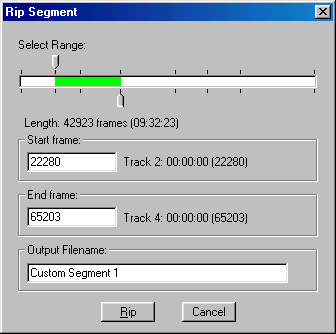
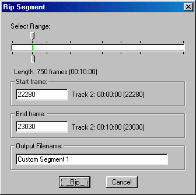

If you need to rip just a portion of one or more track, or to combine
one or more tracks, click on "File->Rip Segment" to bring up the Rip
Segment dialog.

The top slider represents the start frame for the segment to rip, and the
bottom slider represents the end frame. You can "snap" the sliders to
the beginning of the current or next track by clicking directly to the left
or to the right of the slider. You can manually enter the start/end
frames -- the length of the currently selected segment is shown in
(minute:second:frame) format. A frame is 1/75 of a second. It also
indicates where the selected segment starts and ends relative to the start of
tracks. In the example above, it is set to rip tracks 2 and 3 as one
contiguous segment -- the overall length of the segment is 42923 frames, or
9 minutes, 32 seconds and 23 frames (or about 0.31 sec.).

In the example above, it will rip 10 seconds starting at the beginning of
track 2.